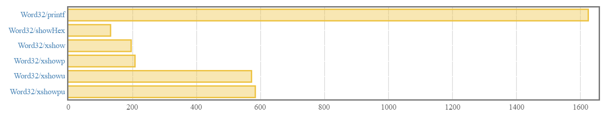

Jason Shipman
August 10, 2017

In the previous post, we built our initial version of hexy, a hexadecimal pretty printing library. Our API looked like this:
class HexShow a where
xshow :: a -> String
xshowu :: a -> String
xshowp :: HexShow a => a -> String
xshowpu :: HexShow a => a -> StringWe added some unit tests as well as some benchmarks. The benchmark report’s summary looked like this:

The result type for all functions in our API is String. We remember that String is a type synonym for [Char], so String is a list of characters. The list is ubiquitous in Haskell code, but it is not always the most performant choice for text data. Lists in Haskell are linked lists, and their memory representation is illustrated on this slide from Johan Tibell’s High-Performance Haskell. The whole High-Performance Haskell deck is well worth a read.
In GHC, the Char data type is defined as follows:
data {-# CTYPE "HsChar" #-} Char = C# Char#Don’t worry about the # symbols and the CTYPE bit for now. From Johan Tibell’s slides and some GHC digging, we know that the head of every cons (a.k.a. :) in our String is 2 machine words - 1 for the C# constructor and 1 for the Char# value. The cons constructor itself requires 1 machine word. Cons also requires 1 pointer to the head and 1 pointer to the tail, which is 2 more machine words. This means that for a single character in our String, we need 5 machine words! We also have 1 additional machine word from the [] constructor at the end of the list.
Let’s invoke our API’s xshowp function with a Word32:
ghci> xshowp (0x1f :: Word32)
"0x0000001f"Representing "0x0000001f" as a String means we are using 51 machine words for a 10-character string. Oh, the memory overhead!!! Keep in mind, memory overhead does not always result in poor execution time. When working with Strings though, we have to follow a new pointer for every character in the string when the string is evaluated. The String’s characters are not necessarily stored contiguously in memory, so we are hopping around in memory from cons constructor to cons constructor until we hit []. Once we get to a new cons in the string, we must follow a separate pointer just to get to the character value. That is quite a few hops in memory even for something small like a 10-character string!
Our benchmarks are creating the String and not actually using it - to print to the screen, log somewhere, etc. - so even though xshow and xshowp are not horrendously slow, we have effectively pushed performance problems onto our users when they go to use the Strings we provide. We have some evidence of this in our benchmarking runs for xshowu and xshowpu. These functions take the results from xshow and xshowp respectively, then traverse the String’s characters, uppercasing each one if necessary. I did mention that we “cheated” when we implemented it like this, but it may be surprising that xshow and xshowp are about 3 times faster than xshowu and xshowpu. All xshowu and xshowpu are doing on top is uppercasing!
String, I Banish Thee!If String gives poor performance, what are our options? The most popular String alternatives are:
The text package provides packed UTF-16 string types, while the bytestring package provides string types that are packed sequences of bytes. As a rule of thumb, strive to use text when working with textual data and use bytestring when working with binary data. Our API’s result type is textual data so we will pick text.
If we crack open the text docs, we are immediately hit with another decision: Will our API use strict Text or lazy Text? A strict Text is a packed array, while a lazy Text is a list of packed arrays. We might be tempted to think “List? Bad!”, but it really depends on the use cases of our users. We will follow in the footsteps of the text-show package and put the choice on the users of Hexy.
The text package provides a Builder type that can be converted to both strict and lazy Text. We will update Hexy to use the Builder type in the HexShow typeclass, and then provide xshow-like methods for both strict and lazy Texts that will handle the Builder to Text conversions.
String with TextWe first need to update our package.yaml to take on text as a dependency. Our library, test suite, and benchmark suite will all need access to the text package, so we will use hpack’s root-level dependencies feature to avoid repeating ourselves. We will go ahead and move base here too. The below is abbreviated, showing only the updated top-level sections:
benchmarks:
hexy-benchmarks:
dependencies:
- hexy
- criterion
ghc-options:
- -rtsopts
- -threaded
- -with-rtsopts=-N
main: Main.hs
source-dirs: benchmark
dependencies:
- base
- text
library:
dependencies: []
source-dirs: library
tests:
hexy-test-suite:
dependencies:
- hexy
- quickcheck-instances
- tasty
- tasty-auto
- tasty-quickcheck
ghc-options:
- -rtsopts
- -threaded
- -with-rtsopts=-N
main: Main.hs
source-dirs: test-suiteNow we will update the Hexy module to use Text instead of String in the result types:
module Hexy
( HexShow(..)
, xshow
, xshowp
, xshowu
, xshowpu
, xshowl
, xshowlp
, xshowlu
, xshowlpu
) where
import Data.Int (Int, Int16, Int32, Int64, Int8)
import qualified Data.Text as Text
import qualified Data.Text.Lazy as Text.Lazy
import Data.Text.Lazy.Builder (Builder)
import qualified Data.Text.Lazy.Builder as Text.Lazy.Builder
import Data.Word (Word, Word16, Word32, Word64, Word8)
class HexShow a where
xbuild :: a -> Builder
xbuildu :: a -> Builder
xshow :: HexShow a => a -> Text.Text
xshow = Text.Lazy.toStrict . xshowl
xshowp :: HexShow a => a -> Text.Text
xshowp = Text.Lazy.toStrict . xshowlp
xshowu :: HexShow a => a -> Text.Text
xshowu = Text.Lazy.toStrict . xshowlu
xshowpu :: HexShow a => a -> Text.Text
xshowpu = Text.Lazy.toStrict . xshowlpu
xshowl :: HexShow a => a -> Text.Lazy.Text
xshowl = Text.Lazy.Builder.toLazyText . xbuild
xshowlp :: HexShow a => a -> Text.Lazy.Text
xshowlp = Text.Lazy.Builder.toLazyText . prefixHex . xbuild
xshowlu :: HexShow a => a -> Text.Lazy.Text
xshowlu = Text.Lazy.Builder.toLazyText . xbuildu
xshowlpu :: HexShow a => a -> Text.Lazy.Text
xshowlpu = Text.Lazy.Builder.toLazyText . prefixHex . xbuildu
instance HexShow Word32 where
xbuild = xbuildStorable
xbuildu = xbuilduStorable
-- bunch of other instances...The HexShow typeclass used to have the xshow and xshowu functions. Those have been moved out and HexShow provides functions returning Builder values instead. All of the functions outside of the HexShow typeclass are defined in terms of HexShow’s functions. xshow and its variants are here, but now we have 4 additional functions:
xshowl :: HexShow a => a -> Text.Lazy.Textxshowlp :: HexShow a => a -> Text.Lazy.Textxshowlu :: HexShow a => a -> Text.Lazy.Textxshowlpu :: HexShow a => a -> Text.Lazy.TextThese are identical to their xshow counterparts except they provide a lazy Text (from module Data.Text.Lazy) instead of a strict Text (from module Data.Text). This is purely to make the interface easier to work with for our users. Users can directly work with Builder if they want, or they can get strict or lazy Text without worrying about manually doing the conversion dance from Builder.
The above will not compile just yet because we need to implement the xbuildStorable and xbuilduStorable functions. Here is our updated Hexy.Internal module contents:
{-# LANGUAGE OverloadedStrings #-}
module Hexy.Internal where
import qualified Data.Char as Char
import Data.Monoid ((<>))
import Data.Text.Lazy.Builder (Builder)
import qualified Data.Text.Lazy as Text.Lazy
import qualified Data.Text.Lazy.Builder as Text.Lazy.Builder
import Foreign.Storable (Storable(..))
import qualified Foreign.Storable as Storable
xbuildStorable :: (Integral a, Show a, Storable a) => a -> Builder
xbuildStorable v = zeroPaddedHex . buildHex Char.intToDigit $ v
where
zeroPaddedHex hex = go numPadCharsNeeded hex
where
go 0 b = b
go n b = go (n - 1) (Text.Lazy.Builder.singleton '0' <> b)
numPadCharsNeeded = lengthWithoutPrefix - hexLength
lengthWithoutPrefix = fromIntegral $ 2 * Storable.sizeOf v
hexLength = Text.Lazy.length . Text.Lazy.Builder.toLazyText $ hex
xbuilduStorable :: (Integral a, Show a, Storable a) => a -> Builder
xbuilduStorable v = zeroPaddedHex . buildHex (Char.toUpper . Char.intToDigit) $ v
where
zeroPaddedHex hex = go numPadCharsNeeded hex
where
go 0 b = b
go n b = go (n - 1) (Text.Lazy.Builder.singleton '0' <> b)
numPadCharsNeeded = lengthWithoutPrefix - hexLength
lengthWithoutPrefix = fromIntegral $ 2 * Storable.sizeOf v
hexLength = Text.Lazy.length . Text.Lazy.Builder.toLazyText $ hex
prefixHex :: Builder -> Builder
prefixHex b = "0x" <> b
buildHex :: (Integral a, Show a) => (Int -> Char) -> a -> Builder
buildHex = buildWordAtBase 16
buildWordAtBase :: (Integral a, Show a) => a -> (Int -> Char) -> a -> Builder
buildWordAtBase base toChr n0
| base <= 1 = errorWithoutStackTrace ("Hexy.buildWordAtBase: applied to unsupported base " ++ show base)
| n0 < 0 = errorWithoutStackTrace ("Hexy.buildWordAtBase: applied to negative number " ++ show n0)
| otherwise = buildIt (quotRem n0 base) mempty
where
buildIt (n, d) b = seq c $
case n of
0 -> b'
_ -> buildIt (quotRem n base) b'
where
c = toChr $ fromIntegral d
b' = Text.Lazy.Builder.singleton c <> bxbuildStorable looks awfully similar to our previous xshowStorable function. The flow is exactly the same and we are using text’s Builder API instead of Haskell’s list API. We have a copy-paste uppercase version of xbuildStorable in xbuilduStorable. The only difference is the uppercasing character conversion function. We will worry about DRY-ing these up in a subsequent post.
We are no longer using showHex from the Numeric module in base to do all the hexadecimal conversion work for us. buildHex replaces showHex, and buildHex offloads to the new buildWordAtBase function at the bottom. The definition of buildWordAtBase looks like showIntAtBase from base and is hauntingly similar to showbIntAtBase from the text-show package. This function keeps quotRem-ing by 16 the input value down to 0, keeping track of the hex characters from the remainders along the way, and building the text from least significant to most significant digit.
The seq function used above might look a little strange:
seq :: a -> b -> bseq evaluates its first argument to weak head normal form then returns its second argument. Don’t worry about the use of seq here - the code came straight from base’s definition for showIntAtBase and was edited to work for Builder instead of String. In a later post, we will touch on bang patterns which are a convenient sugar on top of seq.
The final updated piece in the code above is prefixHex. Builders have a Monoid instance, so we use <> to prepend "0x" on the input builder. We switched on the OverloadedStrings language extension so that we can treat the string literal of "0x" as a Builder value.
Our unit tests will need some minor updates to work with the new API. The test suite diff is available on GitHub.
We updated our API to use Text instead of String. We should now re-run our benchmarks. We will make a small tweak to our benchmarks to support our new Hexy functions. The benchmark suite diff is available here on GitHub.
First, the benchmark results from the previous post so we can compare:
Now we will run the benchmarks for this post’s changes:
$ stack bench --benchmark-arguments "--output bench.html"View the full report from this run here. The summary looks like this (scales are not the same due to printf):

Oh no! We successfully made all of our functions slower, not faster! For example, xshow took about 200 nanoseconds in our String-based API and now it takes about 500 nanoseconds. Ouch… Keep in mind that xshow now has to convert the underlying Builder result to a lazy Text before finally converting to a strict Text. Remember this note too from the previous post:
These benchmark results are not all bad though. For one, our API is no longer pushing the performance problems of working with String values on our users. The other saving grace is that the uppercase versions no longer take almost 3 times as long as the lowercase versions. The performance of the uppercase versions is not terribly far off from the performance of the uppercase versions in our previous String-based iteration of the API. The latter point is not a strong one though as our use of Builder forced us away from “cheating” with the uppercase versions - i.e. we are uppercasing as we build the string as opposed to a traversal pass after building the string.
We are also doing something strange in our new xbuildStorable and xbuilduStorable functions. See if you spot it! We will address the strange bit in a later post. (Hint: it hurts performance!)
Our users may be happy that they can do fast things with Hexy’s Text results once they have them, but they likely will not be too happy about having to wait so long on Hexy to dish them out!
At this point, you may be thinking this post series is a big bait-and-switch and that String is faster than Text. I will ask you to trust me that switching from String to Text will pay off for us eventually. It will ultimately give us more flexibility for optimization and is a more performance-friendly result type for our users.
In the next post, we will take a break from the String versus Text cage match. We will turn our attention to GHC’s SPECIALIZE pragma.
All code in this post is available on GitHub.
{kind=link}